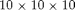
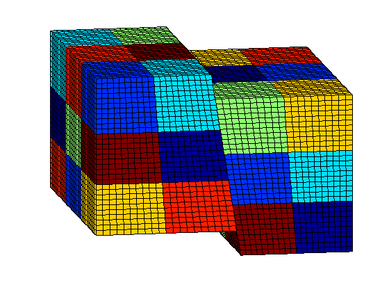
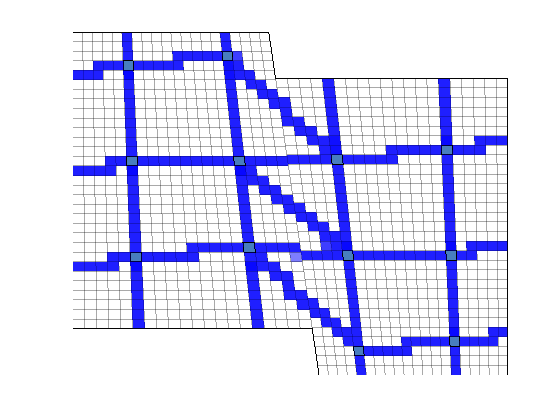
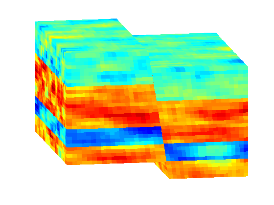
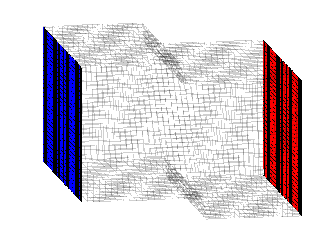
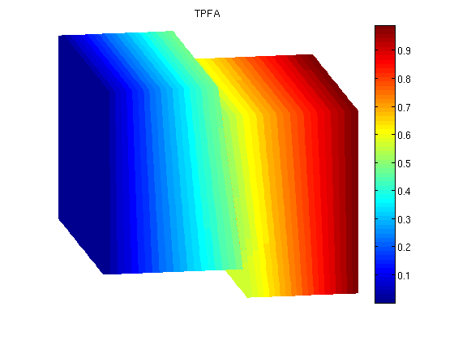
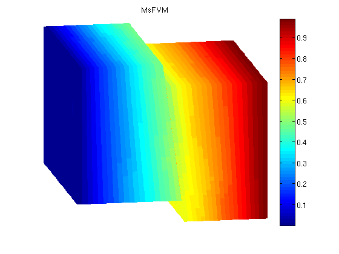
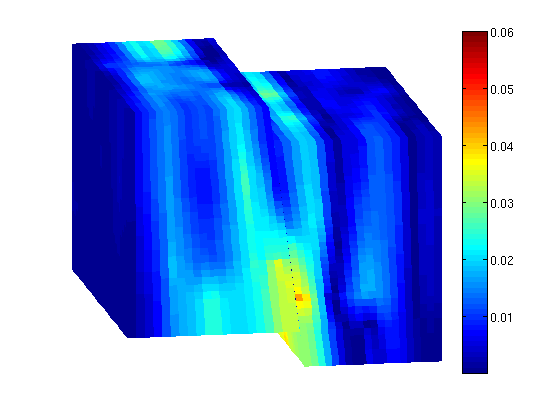

Example demonstrating Multiscale Finite Volume Solver over a fault for a corner point grid.
This is an example demonstrating the MsFV solver on a faulted grid. The coarse dual grid should be provided in the file fault_dual.mat and was produced by an inhouse algorithm.
Contents
Load the modules required for the example
mrstModule add coarsegrid msfvm
Define grid
We define a fine grid of a Cartesian block divided by a sloping fault, with skewed pillars via the GRDECL format. A coarse grid with block size of  is used.
nx = 40; ny = 30; nz = 31; Nx = 4; Ny = 3; Nz = 3; % Create grid using deck grdecl = oneSlopingFault([nx, ny, nz], 5); G = processGRDECL(grdecl, 'Verbose', false); clear grdecl; % Add geometry information G = computeGeometry(G);
Generate the coarse grid
We process the partition and plot it.
p = partitionUI(G, [Nx, Ny, Nz]); p = processPartition(G, p); CG = generateCoarseGrid(G, p); CG = coarsenGeometry(CG); clf; plotCellData(G, mod(p, 7), 'edgec', 'k') view(-10,15); axis tight off;
Load the corresponding dual grid
The dual grid was created using an in-house algorithm which will be published at a later date.
load fault_dual
Visualize the dual grid
We plot the edges between the coarse block centroids
clf; plotDual(G, DG) view(0,0); axis tight off;
Define permeability and fluid
Disable gravity. Can be enabled if one finds that sort of thing interesting.
gravity off; % Instansiate a fluid object for one phase flow. fluid = initSingleFluid('mu' , 1*centi*poise , ... 'rho', 1014*kilogram/meter^3); % Create layered permeability in logical indices to emulate sedimentary % rocks across the fault layers = [100 400 50 350]; K = logNormLayers([nx, ny, nz], layers); rock.perm = convertFrom(K(1:G.cells.num), milli*darcy); % mD -> m^2 % Plot the permeability clf; plotCellData(G, log10(rock.perm)); view(-10,15); axis tight off; T = computeTrans(G, rock);
Add a simple Dirichlet pressure boundary
We add boundary conditions along the extremal values of the x axis.
bc = []; % Find the edges and add unit and zero pressure boundary condition there d = abs(G.faces.centroids(:,1) - max(G.faces.centroids(:,1))); ind1 = find (d < 1e6*eps); bc = addBC(bc, ind1, 'pressure', 1); d = abs(G.faces.centroids(:,1) - min(G.faces.centroids(:,1))); ind0 = find (d < 1e6*eps); bc = addBC(bc, ind0, 'pressure', 0); % Plot the faces selected for boundary conditions, with the largest % pressure in red and the smallest in red. clf; plotGrid(G, 'FaceAlpha', 0, 'EdgeAlpha', .1); plotFaces(G, ind1, 'FaceColor', 'Red') plotFaces(G, ind0, 'FaceColor', 'Blue') view(-10,15); axis tight off;
Solve the pressure system
First we initiate a pressure system. This structure is always required, but without transport only the grid is relevant.
sol = initState(G, [], 0, 1); % Solve TPFA reference solution. solRef = incompTPFA(sol, G, T, fluid, 'bc', bc); % Solve multiscale pressure. Reconstruct conservative flow using flow basis % functions. solMSFV = solveMSFV_TPFA_Incomp(sol, G, CG, T, fluid, 'Dual', DG, ... 'Reconstruct', true, 'bc', bc, 'Verbose', false, 'SpeedUp', true);
Plot TPFA solution
clf; plotCellData(G, solRef.pressure); view(-10,15); axis tight off; colorbar; set(gca, 'CLim', [0, max(solRef.pressure)]); title('TPFA')
Plot MSFVM solution
clf; plotCellData(G, solMSFV.pressure); view(-10,15); axis tight off; colorbar; title('MsFVM') % Use same axis scaling as the TPFA solution set(gca, 'CLim', [0, max(solRef.pressure)]);
Plot error
reportError(solRef.pressure, solMSFV.pressure); clf; % Plot the error scaled with local variation plotCellData(G, abs(solRef.pressure - solMSFV.pressure) ./ abs(max(solRef.pressure - min(solRef.pressure)))); view(-10,15); axis tight off; colorbar;
ERROR: 2: 0.02592762 Sup: 0.07009045 Minimum 0.00001466